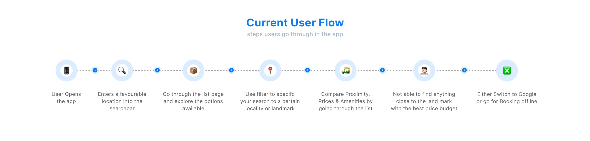
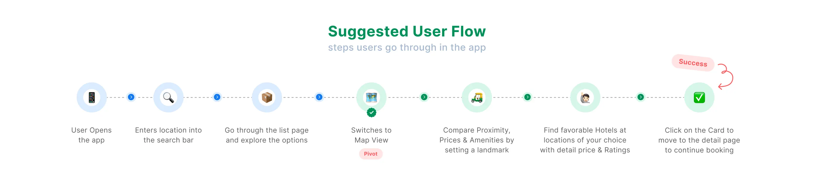
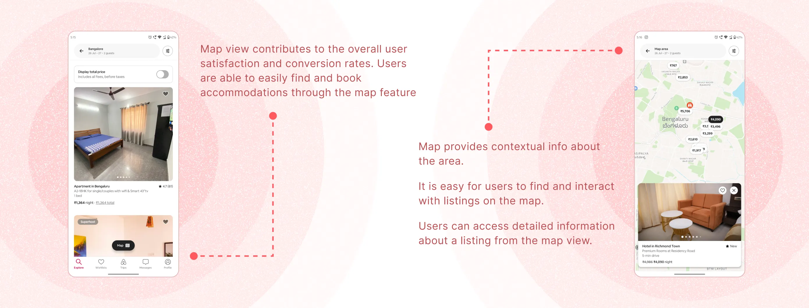
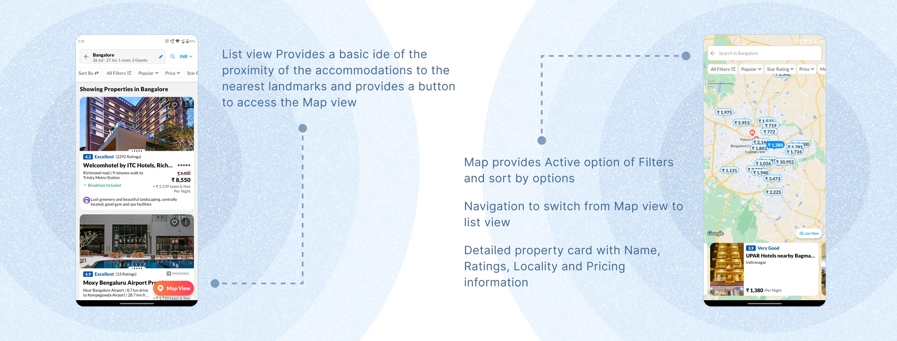
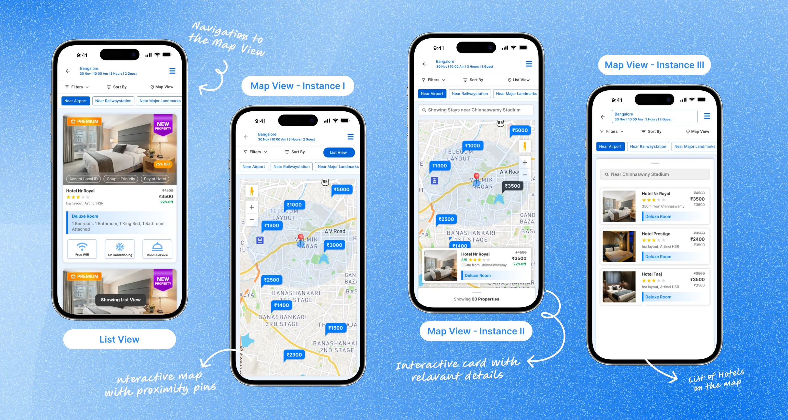
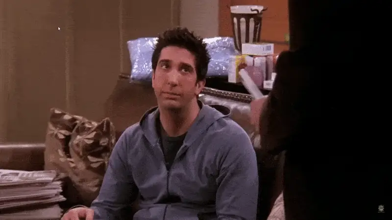

The Context
A list view that made comparison nearly impossible
Picture booking a hotel near a stadium in a traffic-heavy city, the night before a big event. Dozens of options show up in a list — prices, ratings, amenities — but no clear sense of how far each one actually is from where you need to be.
After several failed attempts to compare price against distance, most people gave up on the app entirely and searched Google instead.
The Problem
Users couldn't compare price and proximity at the same time
The list view forced a tradeoff: see prices, or estimate distance — never both clearly. That friction was costing bookings.

The current user flow — where users get stuck
User Stories
What the redesign needed to support
- Search hotels near a landmark
- Compare which hotel is nearest to it
- Check and compare prices of nearby hotels
- Apply filters on the hotel list
- Book the hotel of choice

The suggested user flow after redesign
Competitive Analysis
Learning from Airbnb and MakeMyTrip
I audited the map-view experiences of two category leaders — Airbnb and MakeMyTrip — across UI, usability, functionality, and differentiation to identify what a strong map-first booking flow needed to get right.

Insights from Airbnb

Insights from MakeMyTrip
Jobs To Be Done
Three problems the design had to solve
- Help users discover the map view feature
- Design an intuitive map with on-map filters and search
- Design hotel cards with limited, relevant info for fast decisions
Wireframes & Mockups
From paper sketches to polished screens
Wireframes let us validate the flow early and cheaply, before investing in visual design. Once the structure felt right, we layered in colour, typography, and brand details to bring the screens to life.
The final designs were turned into interactive prototypes and tested with real users — their feedback shaped the polish that shipped to production.
Paper wireframes

Polished mockups with annotations
What we noticed
After launch, user engagement rose 35% as people spent more time exploring the map. Booking conversion lifted 8%, and bounce rate dropped 15% — users found what they needed faster.

← Back to all case studies